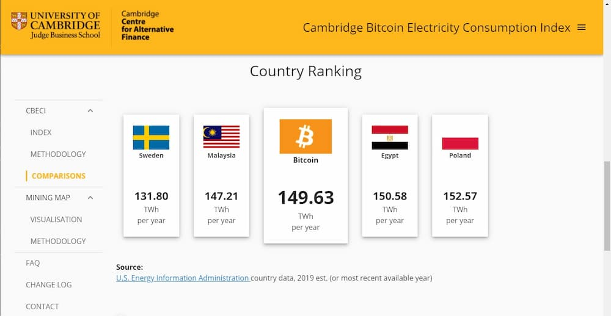

El miércoles 12 de mayo, Elon Musk, CEO de Tesla, anunció en su cuenta de Twitter que su empresa dejará de aceptar Bitcoin como método de pago, en este blogpost te lo explico todo.
Tesla & Bitcoin pic.twitter.com/YSswJmVZhP
— Elon Musk (@elonmusk) May 12, 2021
Traduciendo ese Tweet, dice:
Tesla ha suspendido la compra de vehículos usando Bitcoin. Nos
preocupa
el acelerado incremento del uso de combustibles fósiles para la minería de Bitcoin y
sus transacciones, especialmente carbón, que produce peores emisiones que cualquier otro
combustible.
La criptomoneda es una buena idea en muchos niveles, y creemos que tiene un futuro prometedor, pero
esto no puede dejar un gran costo al medio ambiente.
Tesla no venderá ningún Bitcoin e intentaremos usarlo para transacciones tan pronto como la minería
use energías más sustentables. También estamos buscando otras criptomonedas que usen menos del 1% de
energía que consume Bitcoin por transacción.
¿Qué es Bitcoin?
Empecemos diciendo que el Bitcoin es una criptomoneda, que no es controlada por ningún banco o gobierno y surge en 2008 por un japonés anónimo.
Si no hay un banco detrás de las cortinas, entonces, ¿Quién la controla? Hay superordenadores por todo el mundo que se encargan de culminar miles de transacciones al día. A esto es a lo que se le llama "Minar Bitcoin" y ellos son la base del edificio, quienes hacen que esta idea funcione.
Tu mismo puedes minar Bitcoin con tu computadora, pero no es del todo una buena idea, por lo que la factura de la luz de tu casa no va a compensar el dinero que ganes minando, simplemente no es rentable.
En cambio, hay computadores superpotentes que harán muchísimos calculos por segundo, pero también consumirán muchísima energía por segundo. Por esto es que muchas de las máquinas para minar Bitcoin están en China, la electricidad allá es muy barata.
Dos tercios de toda la energía electrica producida en China viene del carbón, dejando una huella de carbono enorme, además, estamos hablando de Tesla, una empresa dedicada a las energías limpias, carros eléctricos, baterías para páneles solares, etc.
Entra Tesla en escena
En febrero del 2021 Tesla compró 1.5 billones de dólares en Bitcoin,"Para una mayor flexibilidad y maximizar la rentabilidad de nuestro dinero" afirmó la compañia. Semanas mas tarde lo aceptó como método de pago.
You can now buy a Tesla with Bitcoin
— Elon Musk (@elonmusk) March 24, 2021
Luego, Elon agregó el hashtag #bitcoin a su biografía de Twitter. Y semanas mas tarde en Clubhouse dijo "Llegado a este punto creo que el Bitcoin es algo bueno, soy un partidario de Bitcoin". El valor de la criptomoneda se disparó por toda esta serie de eventos.
Y ahora, ayer, afirmó que Tesla dejaría de usar Bitcoin como método de pago por su enorme impacto medioambiental. Drásticamente el precio de la moneda bajó. Muchos aseguran que el fin de Bitcoin ha llegado, ¿El Bitcoin de verdad contamina tanto?, ¿De verdad es el fin?
¿El Bitcoin de verdad contamina tanto?
Un servidor de minería de Bitcoin debe estar encendido 24/7, procesar muchos blockchains por día y hacer cálculos matemáticos complejos. Toda la energía que se usa para minar Bitcoin anualmente se compara con la que consume Egipto en el mismo periodo de tiempo. Estamos hablando de 149 teravatios-hora por año. Muchísimo.
Foto sacada del Cambridge Bitcoin Electricity Consumption Index.
Si bien, es verdad que el Bitcoin y las criptomonedas en general requieren de cantidades enormes de energía, también hay que tener en cuenta que es dinero virtual. No se talaron árboles para imprimir papel. Es necesario hacer estudios sobre pros y contras de cada caso.
El Bitcoin consume mucha energía, las luces navideñas también lo hacen. El criptominado está sometido a revisión por los legisladores encargados del consumo energético en Estados Unidos, las luces de navidad no.
¿De verdad es el fin?
Jack Dorsey, director ejecutivo de Twitter invertirá 10 millones de dólares en la creación de tecnologías más limpias para la producción de criptomonedas. Aker Solutions construirá instalaciones mineras que consumen energía renovable.
Por otro lado, están surgiendo a la luz otras alternativas de criptomonedas que consumen mucha menos energía, por ejemplo Cardano.
Expertos dicen que si la transición de Bitcoin a energías renovables no ocurre rápido, los inversores buscarán otras criptodivisas menos dañinas para el medio ambiente. A mi me gustaría agregar que las futuras declaraciones por parte de Elon Musk y otros inversores de renombre pueden acelerar este proceso insertando más presión.
Puede que más que un tema de contaminación ambiental, sea un tema de marketing. Tesla podría sacar su propia criptomoneda o adoptar la famosa Dogecoin que propone Elon Musk. O crear centrales de minería que usen energías renovables así como hace Aker Solutions.
¿Entonces?, me siento muy feliz de que te hayas leído mi blogpost: ¡Házmelo saber!, me encanta que me manden tweets, a santigo171 así que ya tu sabe, ¿Qué te gustó?, ¿Qué no te gustó?, ¿Cómo podría mejorar?, espero tu tweet.
Mas entradas de blog dando click aquí